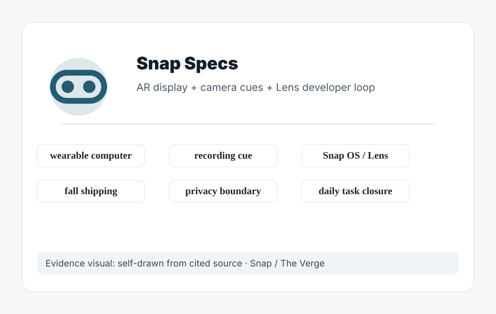
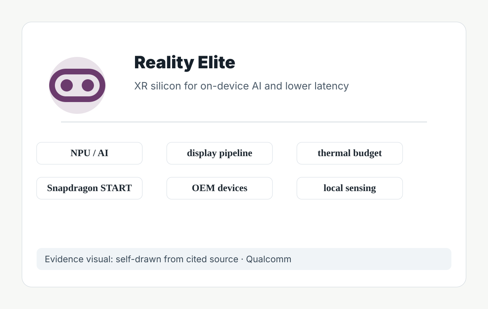
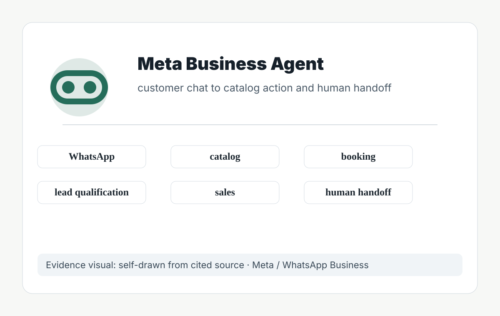
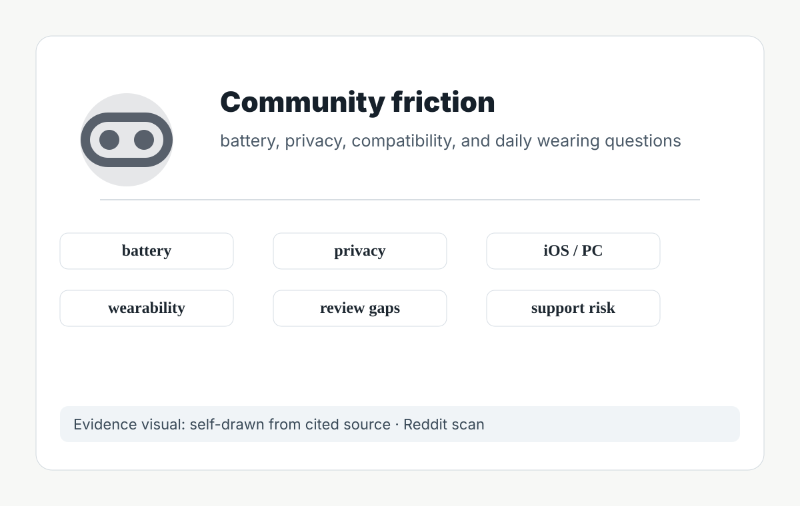
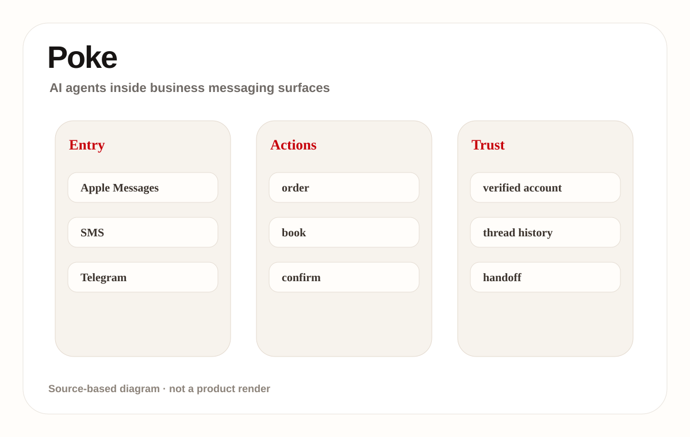
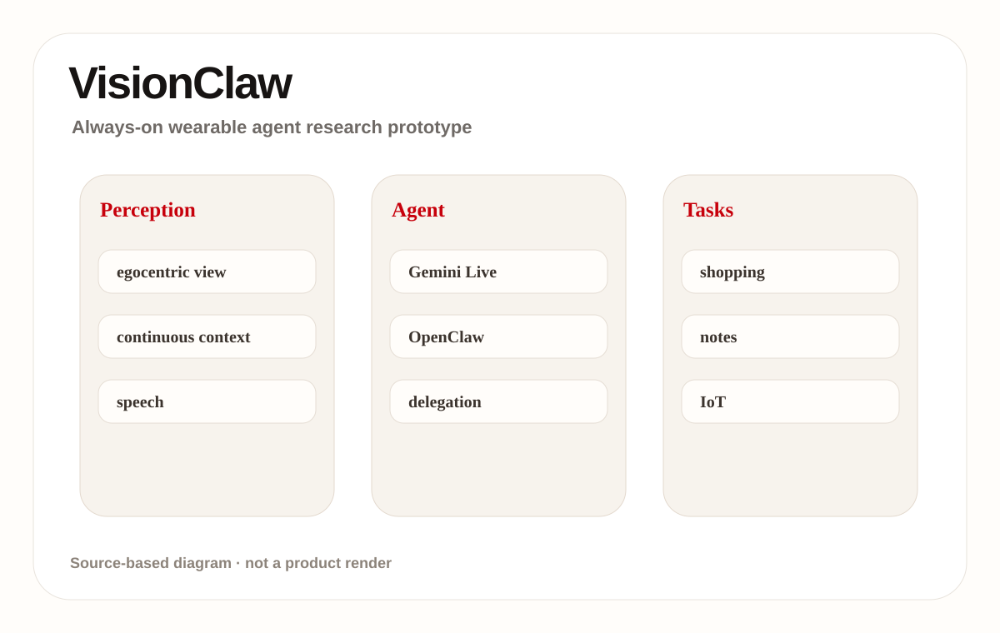
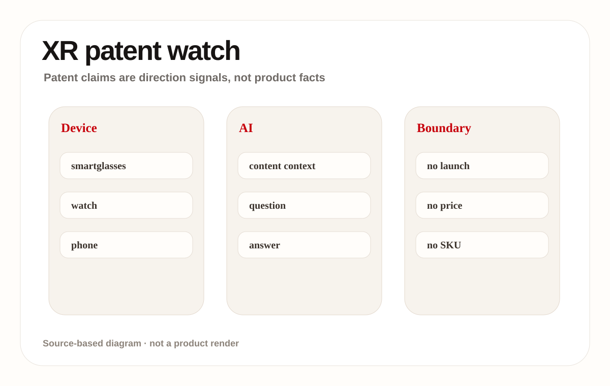
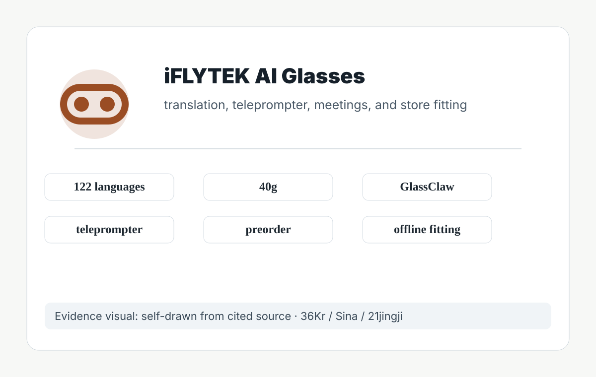
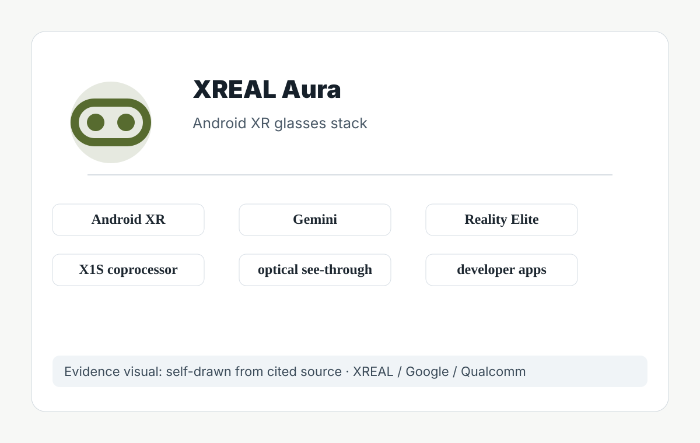

Confirmed product: see-through AR glasses positioned as a wearable computer. Sources show preorder language, a fall 2026 shipping window, Snap OS / Lens developer surface, cameras, display, and recording cues. Reliable reporting gives a $2,195 price, $200 deposit, and US/UK/France scope. Any price, weight, battery, chipset, region, shipment, API version, or user quote not stated by the cited sources remains source not stated. The product read evaluates the current operable surface, not the company vision.
01
2026-06-22 · America/Toronto
AI Daily
Monday issue: AI glasses enter platform pressure tests as desktop and messaging agents take over real workflows
The strongest signal today comes from glasses: Snap Specs, XREAL Aura, iFLYTEK AI Glasses, and VisionClaw research all point to the same question: should the default AI entry point move onto the face?
This is not merely another display; it brings permission, bystander privacy, wear time, heat/power, developer supply, and failure takeover into one product object.
This issue separates confirmed products, startup signals, research signals, and patent signals so that vision, papers, and community heat do not become false launch facts.
HCIAI hardwaresmart glassesagentic desktopbusiness messagingAndroid XRwearable AI
Sources: Cover source

02
Issue map
Structure before evidence
Read today through eight lanes: official products, reviews, community friction, wild products, research, patents, China, and global signals.
03
Official
Official
Official Desk
confirmed product · high / official product plus media launch details
Snap Specs: consumer AR glasses push AI into a near-eye operating surface
developer surface · high / official silicon platform and developer program signal
Snapdragon Reality Elite: XR glasses competition shifts toward on-device AI plus heat and power constraints
developer surface · high / official release notes and product page
Codex Windows computer use: software agents move from code sandboxes into real desktop action
04
Official Desk · 1/3
Official
confirmed product · high / official product plus media launch details
accessed 2026-06-22
Snap Specs: consumer AR glasses push AI into a near-eye operating surface
Product: Snap Specs. Snap positions Specs as a wearable computer in see-through AR glasses, with preorder language, a fall shipping window, Snap OS / Lens developer surface, and visible recording cues described by sources.
The wearer invokes tasks through voice, spatial input, camera perception, and Lens apps for navigation, translation, spatial measurement, first-person capture, or lightweight actions. The phone becomes secondary; near-eye display provides feedback, and body cues tell bystanders when recording may be happening. The interaction is evaluated as a loop rather than a feature list: invocation, context capture, visible state, confirmation, action, handoff, and recovery all need to be present for repeated use.
The stack includes Snap Specs product page, Spectacles developer documentation, Snap OS / Lens ecosystem, see-through display, and camera/spatial input. Two Snapdragon processors and roughly four-hour battery are reported by media; final detailed specs remain official-source bound. Stack evidence is kept conservative because interface claims often move faster than shipping systems; every disclosed layer must translate into lower latency, clearer feedback, or better permission control.
05
Official Desk · 2/3
Official
confirmed product · high / official product plus media launch details
accessed 2026-06-22
Snap Specs: consumer AR glasses push AI into a near-eye operating surface
Product: Snap Specs. Snap positions Specs as a wearable computer in see-through AR glasses, with preorder language, a fall shipping window, Snap OS / Lens developer surface, and visible recording cues described by sources.
Useful scenes are walking navigation, live translation, spatial measurement, developer Lens prototypes, short capture, and moving small phone tasks to the face. The real use case is repeated daily closure, not a launch-video AR moment. A strong use case should remove a step the user already dislikes, not simply move the same work into a more novel surface or a more expensive device.
The pain point is phone-first AR friction: take out phone, unlock, open app, aim at reality, then explain context. Glasses bind input to environment, but wearing cost, privacy anxiety, and battery limits can add new friction. The pain point is counted only when the product reduces explanation, switching, waiting, physical effort, or cleanup after failure in a way ordinary users can notice.
The new technology signal is consumer AR display, AI/vision, OS shell, developer Lens runtime, and visible privacy cues combined into one wearable platform. It moves from camera accessory toward wearable OS candidate. The technology is meaningful only when it changes the user control model: what the system knows, what it is doing, when it asks, and how action can be reversed.
06
Official Desk · 3/3
Official
confirmed product · high / official product plus media launch details
accessed 2026-06-22
Snap Specs: consumer AR glasses push AI into a near-eye operating surface
Product: Snap Specs. Snap positions Specs as a wearable computer in see-through AR glasses, with preorder language, a fall shipping window, Snap OS / Lens developer surface, and visible recording cues described by sources.
Sources indicate preorders and fall 2026 shipping. Region, price, and deposit follow reliable reporting. Support policy, production batches, developer eligibility, and long-term app supply are source not stated.
Unknowns are price resistance, appearance, all-day battery, heat, bystander privacy, developer supply, and failure feedback. Reviews must test real wear time, recording cues, display legibility, and whether it replaces phone moments. The remaining risk is operational: support policy, privacy disclosure, latency under load, edge-case recovery, and whether the promised workflow survives outside curated demos.
Verdict: today’s cover product. Specs pushes AI glasses into a buyable and developable stage, but success depends on daily task closure and social acceptability, not the AR effects in launch media. Design teams should watch whether the glasses provide a clear moment-by-moment state model: idle, listening, recording, processing, asking for confirmation, and failed. Without that grammar, the user and bystanders cannot build trust even if the hardware is technically impressive. In HCI terms, the deciding issue is not whether the agent can act once, but whether the person can understand, revise, undo, and repeat the action safely in an ordinary day.
07
Official Desk · 1/3
Official
developer surface · high / official silicon platform and developer program signal
accessed 2026-06-22
Snapdragon Reality Elite: XR glasses competition shifts toward on-device AI plus heat and power constraints
Product: Snapdragon Reality Elite. Qualcomm announced the Reality Elite XR platform and positions XREAL Aura as an early device signal; official material emphasizes performance, NPU, display, efficiency, and START developer acceleration.

Developer and hardware platform surface for XR, AI wearables, and spatial-computing devices. Qualcomm’s release and AWE material tie it to early device signals such as XREAL Aura; media reports record GPU/CPU/NPU gains, 48 TOPS, and 4.4K-per-eye claims. Any price, weight, battery, chipset, region, shipment, API version, or user quote not stated by the cited sources remains source not stated. The product read evaluates the current operable surface, not the company vision.
Users do not operate the chip directly, but experience it as launch speed, spatial tracking, hand feedback, translation latency, display stability, and thermal throttling. It is the substrate for smooth glasses interaction. The interaction is evaluated as a loop rather than a feature list: invocation, context capture, visible state, confirmation, action, handoff, and recovery all need to be present for repeated use.
The stack includes Snapdragon Reality Elite, XR display pipeline, AI/NPU, local sensor processing, power efficiency, and Snapdragon START developer acceleration. OEM tuning, cost, and production device form are source not stated. Stack evidence is kept conservative because interface claims often move faster than shipping systems; every disclosed layer must translate into lower latency, clearer feedback, or better permission control.
08
Official Desk · 2/3
Official
developer surface · high / official silicon platform and developer program signal
accessed 2026-06-22
Snapdragon Reality Elite: XR glasses competition shifts toward on-device AI plus heat and power constraints
Product: Snapdragon Reality Elite. Qualcomm announced the Reality Elite XR platform and positions XREAL Aura as an early device signal; official material emphasizes performance, NPU, display, efficiency, and START developer acceleration.
Use cases include optical see-through glasses, mixed-reality headsets, AI avatars, live translation, object generation, spatial collaboration, and developer reference designs. A strong use case should remove a step the user already dislikes, not simply move the same work into a more novel surface or a more expensive device.
It addresses XR being constrained by latency, heat, weight, battery, and weak on-device model capability. Good HCI cannot survive if heat and power fail during daily wear. The pain point is counted only when the product reduces explanation, switching, waiting, physical effort, or cleanup after failure in a way ordinary users can notice.
The technology signal is XR silicon coordinating AI acceleration with display, sensing, and low power rather than chasing mobile-SoC peak performance alone. The technology is meaningful only when it changes the user control model: what the system knows, what it is doing, when it asks, and how action can be reversed.
09
Official Desk · 3/3
Official
developer surface · high / official silicon platform and developer program signal
accessed 2026-06-22
Snapdragon Reality Elite: XR glasses competition shifts toward on-device AI plus heat and power constraints
Product: Snapdragon Reality Elite. Qualcomm announced the Reality Elite XR platform and positions XREAL Aura as an early device signal; official material emphasizes performance, NPU, display, efficiency, and START developer acceleration.
The platform is announced and tied to AWE 2026 device signals; consumer availability depends on OEM devices. A silicon launch does not prove final-device experience.
Unknowns are real-device thermals, OEM cost, developer-tool maturity, long-wear performance, and whether small glasses can sustain headline performance. The remaining risk is operational: support policy, privacy disclosure, latency under load, edge-case recovery, and whether the promised workflow survives outside curated demos.
Verdict: Reality Elite is an underlying product signal. The HCI ceiling of AI glasses is being defined by silicon heat, power, latency, and developer tooling together. For product teams, the silicon story matters only when it lowers visible interaction cost: less waiting, fewer tracking misses, better thermal comfort, longer sessions, and enough local intelligence to avoid cloud round trips during situated use. In HCI terms, the deciding issue is not whether the agent can act once, but whether the person can understand, revise, undo, and repeat the action safely in an ordinary day.
10
Official Desk · 1/3
Official
developer surface · high / official release notes and product page
accessed 2026-06-22
Codex Windows computer use: software agents move from code sandboxes into real desktop action
Product: Codex Windows computer use. OpenAI release notes state that the Codex app supports Windows computer use / remote control: users can ask Codex to see, click, and type in Windows apps and continue threads from mobile or Mac.

Confirmed product/developer surface: OpenAI release notes say the Codex app supports Windows computer use and remote control, letting eligible users ask Codex to see, click, and type in Windows applications and continue threads across devices. Any price, weight, battery, chipset, region, shipment, API version, or user quote not stated by the cited sources remains source not stated. The product read evaluates the current operable surface, not the company vision.
The user runs project files, apps, and local services on a Windows host. Codex can see the screen, click, and type, while the user continues from ChatGPT mobile or Mac to inspect progress, answer prompts, and steer. The interaction is evaluated as a loop rather than a feature list: invocation, context capture, visible state, confirmation, action, handoff, and recovery all need to be present for repeated use.
The stack includes Codex app, Windows host, computer use, remote control, local files, terminal, and app-server context. Enterprise default settings, account eligibility, and Windows details remain release-note bound. Stack evidence is kept conservative because interface claims often move faster than shipping systems; every disclosed layer must translate into lower latency, clearer feedback, or better permission control.
11
Official Desk · 2/3
Official
developer surface · high / official release notes and product page
accessed 2026-06-22
Codex Windows computer use: software agents move from code sandboxes into real desktop action
Product: Codex Windows computer use. OpenAI release notes state that the Codex app supports Windows computer use / remote control: users can ask Codex to see, click, and type in Windows apps and continue threads from mobile or Mac.
Use cases include UI debugging, Windows-only app testing, browser checks, installer verification, remote review of long tasks, and steering after leaving the host machine. A strong use case should remove a step the user already dislikes, not simply move the same work into a more novel surface or a more expensive device.
It solves the gap where agents can work in code sandboxes but cannot touch real application state, while reducing the need for users to wait at the machine. The pain point is counted only when the product reduces explanation, switching, waiting, physical effort, or cleanup after failure in a way ordinary users can notice.
The technology signal is the merge of agent harness with real GUI operation: see/click/type becomes part of engineering workflow, not just patch generation. The technology is meaningful only when it changes the user control model: what the system knows, what it is doing, when it asks, and how action can be reversed.
12
Official Desk · 3/3
Official
developer surface · high / official release notes and product page
accessed 2026-06-22
Codex Windows computer use: software agents move from code sandboxes into real desktop action
Product: Codex Windows computer use. OpenAI release notes state that the Codex app supports Windows computer use / remote control: users can ask Codex to see, click, and type in Windows apps and continue threads from mobile or Mac.
OpenAI release notes state availability for eligible users; enterprise toggles, regions, account tiers, and exact Windows versions are source not stated or official-note bound.
Limits are permission, safety, misclicks, long-task audit, remote-takeover latency, sensitive-data visibility, and whether GUI actions are reviewable afterward. The remaining risk is operational: support policy, privacy disclosure, latency under load, edge-case recovery, and whether the promised workflow survives outside curated demos.
Verdict: this is a strong signal that desktop agents are moving from coding assistant toward real computer collaborator; authorization, feedback, and undo must be default. The interface must make agent action inspectable. A useful implementation should expose what window was touched, what text was entered, what command or click happened, what evidence was checked, and where the user can stop or resume. In HCI terms, the deciding issue is not whether the agent can act once, but whether the person can understand, revise, undo, and repeat the action safely in an ordinary day.
13
Reviews
Reviews
Review Desk
confirmed product · high / official rollout plus media coverage
Meta Business Agent: WhatsApp turns merchant support agents into a default messaging entry point
14
Review Desk · 1/3
Reviews
confirmed product · high / official rollout plus media coverage
accessed 2026-06-22
Meta Business Agent: WhatsApp turns merchant support agents into a default messaging entry point
Product: Meta Business Agent. Meta and WhatsApp Business sources say Business Agent can answer questions, recommend products, book appointments, qualify leads, close sales, and hand off to a team member.

Confirmed product: Meta and WhatsApp Business sources describe global expansion of Business Agent, with question answering, product recommendations, booking, lead qualification, sales closure, and team-member handoff. Any price, weight, battery, chipset, region, shipment, API version, or user quote not stated by the cited sources remains source not stated. The product read evaluates the current operable surface, not the company vision.
A customer finds or messages a business in WhatsApp. The agent answers using business knowledge and catalog data, recommends products or books services, and hands complex issues to staff; the business side may receive overnight briefings and insights. The interaction is evaluated as a loop rather than a feature list: invocation, context capture, visible state, confirmation, action, handoff, and recovery all need to be present for repeated use.
The stack includes WhatsApp Business, Messenger/Instagram, Meta Business Agent, merchant catalogs, enterprise infrastructure integration, and future paid subscription language; token or pricing details remain source-bound. Stack evidence is kept conservative because interface claims often move faster than shipping systems; every disclosed layer must translate into lower latency, clearer feedback, or better permission control.
15
Review Desk · 2/3
Reviews
confirmed product · high / official rollout plus media coverage
accessed 2026-06-22
Meta Business Agent: WhatsApp turns merchant support agents into a default messaging entry point
Product: Meta Business Agent. Meta and WhatsApp Business sources say Business Agent can answer questions, recommend products, book appointments, qualify leads, close sales, and hand off to a team member.
Use cases include presales Q&A, size or inventory questions, booking, local-service inquiries, lead qualification, overnight support, and cross-channel follow-up. A strong use case should remove a step the user already dislikes, not simply move the same work into a more novel surface or a more expensive device.
It addresses small businesses being unable to reply 24/7, slow support training, scattered catalog knowledge, and missed sales leads. The pain point is counted only when the product reduces explanation, switching, waiting, physical effort, or cleanup after failure in a way ordinary users can notice.
The new technology is an agent entering commerce flows inside high-frequency messaging apps, connecting catalog, tone, knowledge, handoff, and business discovery rather than standing alone as a chatbot. The technology is meaningful only when it changes the user control model: what the system knows, what it is doing, when it asks, and how action can be reversed.
16
Review Desk · 3/3
Reviews
confirmed product · high / official rollout plus media coverage
accessed 2026-06-22
Meta Business Agent: WhatsApp turns merchant support agents into a default messaging entry point
Product: Meta Business Agent. Meta and WhatsApp Business sources say Business Agent can answer questions, recommend products, book appointments, qualify leads, close sales, and hand off to a team member.
Official sources describe global expansion and free getting started, with future paid subscription offerings; exact countries, fees, and enterprise integration thresholds are source not stated.
Unknowns include wrong recommendations, refund liability, compliance audit, AI/person identity disclosure, merchant-knowledge freshness, multilingual quality, and whether customers trust machine selling. The remaining risk is operational: support policy, privacy disclosure, latency under load, edge-case recovery, and whether the promised workflow survives outside curated demos.
Verdict: this is the most practical agent-commerce surface: no new hardware required, just changed purchase and support flow inside daily message threads. The trust problem is commercial rather than technical. Customers need a legible boundary between AI advice and merchant commitment, while merchants need logs, escalation controls, knowledge freshness, and a way to correct bad answers quickly. In HCI terms, the deciding issue is not whether the agent can act once, but whether the person can understand, revise, undo, and repeat the action safely in an ordinary day.
17
Community
Community
Community Friction
review/community friction · low-medium / community discussion only
Community friction scan: smart-glasses heat is high, but users still ask about battery, privacy, compatibility, and daily wear
18
Community Friction · 1/1
Community
review/community friction · low-medium / community discussion only
accessed 2026-06-22
Community friction scan: smart-glasses heat is high, but users still ask about battery, privacy, compatibility, and daily wear
Product: Smart glasses community friction. Reddit r/SmartGlasses and r/Xreal discussions show attention to Q4 2026 availability, Android XR, iOS/PC support, real wear, and compatibility; this is friction signal only.

Source-lane scan, not a confirmed product. Today’s Reddit r/SmartGlasses and r/Xreal scan shows users asking about Aura / AR+AI glasses availability windows, Android XR, iOS/PC support, real wear, privacy, and battery. This is friction evidence only, not specification evidence.
The community flow is pre-purchase: users read launch or reservation news, then check forums for compatibility, heat, battery, app supply, and whether the device is worth wearing every day. The signal is hesitation before purchase, not validated experience.
Observable use cases are commuting, translation, navigation, video viewing, developer trial, and lightweight notification. Users are still asking whether these scenes overcome wearing burden.
The pain surfaced is fear of buying a device that cannot be worn all day, does not connect reliably, makes bystanders uncomfortable, or becomes shelfware.
The technology direction is glasses-based AI, spatial display, and mobile ecosystem connection. No community item today is strong enough to become a confirmed product fact.
source not stated; forum posts do not prove sales region, inventory, formal shipment, or support policy.
Missing evidence: long-term reviews, return reasons, wear-time data, privacy complaints, and cross-platform compatibility verification.
Keep as community friction. Promote only after long-term review, user-shot evidence, support data, or an official compatibility matrix appears.
19
Wild
Wild
Wild Desk
startup signal · medium / startup page plus media reports
Poke: putting a personal agent inside Apple Messages instead of another app
20
Wild Desk · 1/3
Wild
startup signal · medium / startup page plus media reports
accessed 2026-06-22
Poke: putting a personal agent inside Apple Messages instead of another app
Product: Poke. Poke’s official page says it works through Apple Messages, WhatsApp, Telegram, and more; media reports say it was approved through Apple Messages for Business.

Startup product signal: Poke’s official page says it works through Apple Messages, WhatsApp, Telegram, and more; media reports say it gained approval through Apple Messages for Business. Any price, weight, battery, chipset, region, shipment, API version, or user quote not stated by the cited sources remains source not stated. The product read evaluates the current operable surface, not the company vision.
The user messages Poke like a person. The agent uses integrations to handle calendar, health/fitness, smart home, photo editing, and daily planning, then returns rich actions inside the thread. The interaction is evaluated as a loop rather than a feature list: invocation, context capture, visible state, confirmation, action, handoff, and recovery all need to be present for repeated use.
The stack includes messaging platforms, Poke account/integrations, Apple Messages for Business pathway, and WhatsApp/Telegram entry points; API details, permission granularity, pricing, and regions are source not stated. Stack evidence is kept conservative because interface claims often move faster than shipping systems; every disclosed layer must translate into lower latency, clearer feedback, or better permission control.
21
Wild Desk · 2/3
Wild
startup signal · medium / startup page plus media reports
accessed 2026-06-22
Poke: putting a personal agent inside Apple Messages instead of another app
Product: Poke. Poke’s official page says it works through Apple Messages, WhatsApp, Telegram, and more; media reports say it was approved through Apple Messages for Business.
Use cases include planning a day, editing photos, controlling smart home devices, checking health records, setting reminders, and compressing multi-app tasks into one message. A strong use case should remove a step the user already dislikes, not simply move the same work into a more novel surface or a more expensive device.
It addresses entry friction for mainstream users who do not want complex agent tools, command-line setup, or another new app. The pain point is counted only when the product reduces explanation, switching, waiting, physical effort, or cleanup after failure in a way ordinary users can notice.
The new technology is not one model; it is an agent distribution layer combining verified messaging, rich actions, personal integrations, and persistent personality. The technology is meaningful only when it changes the user control model: what the system knows, what it is doing, when it asks, and how action can be reversed.
22
Wild Desk · 3/3
Wild
startup signal · medium / startup page plus media reports
accessed 2026-06-22
Poke: putting a personal agent inside Apple Messages instead of another app
Product: Poke. Poke’s official page says it works through Apple Messages, WhatsApp, Telegram, and more; media reports say it was approved through Apple Messages for Business.
The official page is accessible and presents message entry points; Apple approval, usage claims, and platform relationship come from reporting. Countries, subscription, waitlist, and review conditions are source not stated.
Limits include explainability inside a thread, long-term memory privacy, third-party integration permissions, undo for wrong actions, Apple policy changes, and whether users trust a contact with life context. The remaining risk is operational: support policy, privacy disclosure, latency under load, edge-case recovery, and whether the promised workflow survives outside curated demos.
Verdict: Poke is a consumer-agent distribution experiment and is labeled startup signal; its evidence level stays below official platform products. The distribution advantage is also the risk. A message thread feels familiar and low effort, but the agent is crossing private life domains, so permission scoping, memory controls, and reversible actions become the actual product interface. In HCI terms, the deciding issue is not whether the agent can act once, but whether the person can understand, revise, undo, and repeat the action safely in an ordinary day.
23
Research
Research
Research Watch
research signal · medium / arXiv prototype and study, not shipping product
VisionClaw: a research prototype combines seeing the world with agent execution in a glasses workflow
24
Research Watch · 1/3
Research
research signal · medium / arXiv prototype and study, not shipping product
accessed 2026-06-22
VisionClaw: a research prototype combines seeing the world with agent execution in a glasses workflow
Product: VisionClaw. The arXiv paper presents VisionClaw running on Meta Ray-Ban smart glasses, combining egocentric perception, Gemini Live, and OpenClaw agents with lab and deployment studies.

Research prototype, not a confirmed product. The arXiv paper describes it running on Meta Ray-Ban smart glasses, combining egocentric perception, Gemini Live, and OpenClaw agents, with lab and deployment studies. Any price, weight, battery, chipset, region, shipment, API version, or user quote not stated by the cited sources remains source not stated. The product read evaluates the current operable surface, not the company vision.
The user delegates tasks by speech in a real setting. The system perceives objects, documents, posters, or environment context and delegates actions such as adding to cart, creating notes, making calendar events, or controlling IoT. The interaction is evaluated as a loop rather than a feature list: invocation, context capture, visible state, confirmation, action, handoff, and recovery all need to be present for repeated use.
The paper states Meta Ray-Ban smart glasses, egocentric perception, Gemini Live, OpenClaw agents, lab study N=12, and longitudinal deployment; commercialization, privacy policy, and market availability are source not stated. Stack evidence is kept conservative because interface claims often move faster than shipping systems; every disclosed layer must translate into lower latency, clearer feedback, or better permission control.
25
Research Watch · 2/3
Research
research signal · medium / arXiv prototype and study, not shipping product
accessed 2026-06-22
VisionClaw: a research prototype combines seeing the world with agent execution in a glasses workflow
Product: VisionClaw. The arXiv paper presents VisionClaw running on Meta Ray-Ban smart glasses, combining egocentric perception, Gemini Live, and OpenClaw agents with lab and deployment studies.
Research scenarios include adding real-world objects to an Amazon cart, generating notes from physical documents, receiving meeting briefings on the go, creating events from posters, and controlling IoT devices. A strong use case should remove a step the user already dislikes, not simply move the same work into a more novel surface or a more expensive device.
It addresses multi-step friction where real-world tasks require taking a photo, describing it, switching to a phone or computer, and then executing. The pain point is counted only when the product reduces explanation, switching, waiting, physical effort, or cleanup after failure in a way ordinary users can notice.
The technology signal is the merge of always-on perception and agentic task execution, where opportunistic noticing becomes direct delegation. The technology is meaningful only when it changes the user control model: what the system knows, what it is doing, when it asks, and how action can be reversed.
26
Research Watch · 3/3
Research
research signal · medium / arXiv prototype and study, not shipping product
accessed 2026-06-22
VisionClaw: a research prototype combines seeing the world with agent execution in a glasses workflow
Product: VisionClaw. The arXiv paper presents VisionClaw running on Meta Ray-Ban smart glasses, combining egocentric perception, Gemini Live, and OpenClaw agents with lab and deployment studies.
Research prototype only; no consumer launch, price, region, or store path is stated.
Limits include bystander privacy, consent for continuous perception, wrong recognition followed by action, user agency, data retention, glasses-platform permission, and the gap from research to product. The remaining risk is operational: support policy, privacy disclosure, latency under load, edge-case recovery, and whether the promised workflow survives outside curated demos.
Verdict: VisionClaw is research radar, not product fact; it tells AI-glasses makers that pause, undo, and explainable state must be core interaction elements. The research is valuable because it tests agency at the edge of automation. When a device sees continuously and can delegate action, designers must treat interruption, consent, and recovery as primary controls rather than settings. In HCI terms, the deciding issue is not whether the agent can act once, but whether the person can understand, revise, undo, and repeat the action safely in an ordinary day.
27
Patent
Patent
Patent Watch
patent signal · low / patent direction only
Patent radar: XR content companion and smart-glasses AI claims show direction, not product
28
Patent Watch · 1/1
Patent
patent signal · low / patent direction only
accessed 2026-06-22
Patent radar: XR content companion and smart-glasses AI claims show direction, not product
Product: XR AI companion patent watch. Google Patents and patent-media scans show AI/AR glasses, XR content understanding, and content-aware Q&A directions, but patents do not prove launch.

Patent-lane scan, not a product launch. Google Patents and patent-media scans show directions around XR content understanding, smart glasses, and questions about watched content, but a patent only indicates claims and defended interaction space, not device name, launch date, or commercial plan.
The imaginable flow is a user asking questions while watching XR content or viewing real-world objects, with the system answering from current context. Today there is no official product page, SDK, or hardware path proving that flow is shipping.
Observable use cases are content-aware Q&A, AR scene explanation, video/spatial-content understanding, and low-interruption prompts.
The potential pain is avoiding headset removal or separate search while in XR, but the patent does not prove the pain is solved.
The direction is XR content context plus AI companion. Evidence is low and must be crossed with Android XR, Gemini glasses, SDKs, or hardware launches.
No confirmed availability; a patent does not mean the product can be bought, tested, or will ship.
Missing evidence: product page, developer documentation, shipment, price, user setting, privacy policy, and third-party testing.
Keep as patent signal. Raise confidence only when claims cross with official platforms, developer tools, device launches, or reviews.
29
China
China
China / Global Compare
confirmed product · medium-high / China media and preorder reports
iFLYTEK AI Glasses: China’s AI-glasses lane packages translation, teleprompter, and meeting notes as a business entry point
30
China / Global Compare · 1/3
China
confirmed product · medium-high / China media and preorder reports
accessed 2026-06-22
iFLYTEK AI Glasses: China’s AI-glasses lane packages translation, teleprompter, and meeting notes as a business entry point
Product: iFLYTEK AI Glasses. 36Kr, ITHome/Sina, and 21jingji report iFLYTEK AI Glasses with 40g weight, 4,299/4,699 yuan pricing, June 15 preorder, 122-language translation, lip-movement noise reduction, GlassClaw, teleprompter, and offline-store experience.

Confirmed product / China hardware signal: 36Kr, ITHome/Sina, and 21jingji report iFLYTEK AI Glasses with 4,299 yuan standard model, 4,699 yuan battery model, 40g body, 122-language translation, June 15 preorder, and one-thousand-store experience. Any price, weight, battery, chipset, region, shipment, API version, or user quote not stated by the cited sources remains source not stated. The product read evaluates the current operable surface, not the company vision.
The user wears the glasses for face-to-face, online, or call translation; subtitles appear on the lenses and translated speech plays through speakers. In meetings it records and summarizes; in presentations it supports prompting and a physical remote. The interaction is evaluated as a loop rather than a feature list: invocation, context capture, visible state, confirmation, action, handoff, and recovery all need to be present for repeated use.
Sources mention an end-to-end speech-translation model, visual intelligence, lip-movement noise reduction, microphone/algorithm coordination, GlassClaw agent, prescription lenses, and store fitting; chipset, OS, and detailed battery numbers are source not stated. Stack evidence is kept conservative because interface claims often move faster than shipping systems; every disclosed layer must translate into lower latency, clearer feedback, or better permission control.
31
China / Global Compare · 2/3
China
confirmed product · medium-high / China media and preorder reports
accessed 2026-06-22
iFLYTEK AI Glasses: China’s AI-glasses lane packages translation, teleprompter, and meeting notes as a business entry point
Product: iFLYTEK AI Glasses. 36Kr, ITHome/Sina, and 21jingji report iFLYTEK AI Glasses with 40g weight, 4,299/4,699 yuan pricing, June 15 preorder, 122-language translation, lip-movement noise reduction, GlassClaw, teleprompter, and offline-store experience.
Use cases include multilingual meetings, noisy expo/mall conversations, business-trip information capture, meeting notes, interviews, teleprompter presentations, and international client visits. A strong use case should remove a step the user already dislikes, not simply move the same work into a more novel surface or a more expensive device.
It addresses multilingual business communication, meeting cleanup, prompting, and fragmented mobile work, closer to repeated utility than entertainment AR. The pain point is counted only when the product reduces explanation, switching, waiting, physical effort, or cleanup after failure in a way ordinary users can notice.
The technology signal is speech translation, visual noise reduction, lip-reading assistance, and agent task execution placed into a 40g glasses form. The technology is meaningful only when it changes the user control model: what the system knows, what it is doing, when it asks, and how action can be reversed.
32
China / Global Compare · 3/3
China
confirmed product · medium-high / China media and preorder reports
accessed 2026-06-22
iFLYTEK AI Glasses: China’s AI-glasses lane packages translation, teleprompter, and meeting notes as a business entry point
Product: iFLYTEK AI Glasses. 36Kr, ITHome/Sina, and 21jingji report iFLYTEK AI Glasses with 40g weight, 4,299/4,699 yuan pricing, June 15 preorder, 122-language translation, lip-movement noise reduction, GlassClaw, teleprompter, and offline-store experience.
Sources describe June 15 618 preorder and offline store experience; overseas availability, shipping batches, app ecosystem, and support policy are source not stated.
Limits are translation accuracy, noisy-environment pickup, privacy cues, meeting-data security, prescription fitting, weight-battery balance, and whether GlassClaw can complete complex tasks independently. The remaining risk is operational: support policy, privacy disclosure, latency under load, edge-case recovery, and whether the promised workflow survives outside curated demos.
Verdict: China’s AI-glasses lane is betting first on business efficiency and offline fitting channels; it is more concrete than generic AI companion language and easier to test. The strongest HCI signal is scenario selection. Translation, prompting, and meeting cleanup are concrete jobs with immediate feedback, which makes them easier to evaluate than broad companion claims or entertainment-first AR demos. In HCI terms, the deciding issue is not whether the agent can act once, but whether the person can understand, revise, undo, and repeat the action safely in an ordinary day.
33
Global
Global
Global Signals
confirmed product · high / official product and platform pages
XREAL Aura: Android XR moves from headset platform toward lightweight glasses hardware
34
Global Signals · 1/3
Global
confirmed product · high / official product and platform pages
accessed 2026-06-22
XREAL Aura: Android XR moves from headset platform toward lightweight glasses hardware
Product: XREAL Aura. XREAL Aura official, Google, and Qualcomm sources place it in a stack of Android XR, Gemini, Snapdragon Reality Elite, and X1S spatial coprocessor.

Confirmed product: Android XR optical see-through glasses. The official page states Android XR, Gemini, Snapdragon Reality Elite, and XREAL X1S Spatial Coprocessor; reporting adds under-95g weight, 70-degree field of view, 6DoF/hand tracking, and reservation details. Any price, weight, battery, chipset, region, shipment, API version, or user quote not stated by the cited sources remains source not stated. The product read evaluates the current operable surface, not the company vision.
The wearer enters Android XR spatial apps, with Gemini as contextual assistant and the Play/developer ecosystem supplying content. The glasses combine display, sensing, gestures, and spatial input into one wearable flow. The interaction is evaluated as a loop rather than a feature list: invocation, context capture, visible state, confirmation, action, handoff, and recovery all need to be present for repeated use.
The stack includes Android XR, Gemini on Android XR, Snapdragon Reality Elite, XREAL X1S, and optical see-through. Other sensors, battery, brightness, lens options, and thermal design remain bound to later official disclosure. Stack evidence is kept conservative because interface claims often move faster than shipping systems; every disclosed layer must translate into lower latency, clearer feedback, or better permission control.
35
Global Signals · 2/3
Global
confirmed product · high / official product and platform pages
accessed 2026-06-22
XREAL Aura: Android XR moves from headset platform toward lightweight glasses hardware
Product: XREAL Aura. XREAL Aura official, Google, and Qualcomm sources place it in a stack of Android XR, Gemini, Snapdragon Reality Elite, and X1S spatial coprocessor.
Use cases include XR games, spatial sports/video viewing, collaborative prototypes, learning apps, spatial design, and portable Gemini assistance. The core question is whether Android XR apps become daily tools rather than demos. A strong use case should remove a step the user already dislikes, not simply move the same work into a more novel surface or a more expensive device.
It addresses the gap between bulky headsets and small phone screens by moving XR content into lighter glasses. If app supply is thin, heat is high, or connection is complex, hardware friction will swallow platform value. The pain point is counted only when the product reduces explanation, switching, waiting, physical effort, or cleanup after failure in a way ordinary users can notice.
The technology signal is Android XR plus optical see-through, on-device AI silicon, and spatial coprocessing, not a display accessory alone. It makes Android’s glasses route more concrete. The technology is meaningful only when it changes the user control model: what the system knows, what it is doing, when it asks, and how action can be reversed.
36
Global Signals · 3/3
Global
confirmed product · high / official product and platform pages
accessed 2026-06-22
XREAL Aura: Android XR moves from headset platform toward lightweight glasses hardware
Product: XREAL Aura. XREAL Aura official, Google, and Qualcomm sources place it in a stack of Android XR, Gemini, Snapdragon Reality Elite, and X1S spatial coprocessor.
Sources use reservation and fall-launch language and mention US, UK, and Japan reservation signals. Final retail price, shipment batches, app coverage, and regional expansion remain official-source bound.
Unknowns include long wear, battery, heat, outdoor legibility, iOS/PC interoperability, app supply, hand false positives, and whether developers will optimize specifically for glasses. The remaining risk is operational: support policy, privacy disclosure, latency under load, edge-case recovery, and whether the promised workflow survives outside curated demos.
Verdict: Aura turns Android XR from platform vision into reservable hardware. The next gate is independent review proving daily-task usefulness, not just spatial demos. The practical product measure is app continuity. A user should be able to begin with a phone-sized intention, expand into spatial context when useful, and return to a normal mobile workflow without losing state or control. In HCI terms, the deciding issue is not whether the agent can act once, but whether the person can understand, revise, undo, and repeat the action safely in an ordinary day.
37
Watchlist
Next scan
What to watch next
01
Snap Specs: wait for independent review of four-hour battery claims, heat, display legibility, bystander cues, and whether Lens supply supports daily wear.
02
XREAL Aura / Android XR: watch the path from reservation to shipping, Best Buy/regional channels, iOS/PC interoperability, and Android XR app supply.
03
Codex Windows computer use: watch enterprise default settings, audit logs, sensitive-data boundaries, misclick recovery, and latency in cross-device steering.
04
Meta Business Agent / Poke: watch AI identity disclosure in message threads, human handoff, refund responsibility, subscription pricing, and platform-review policy.
05
Research / patents: keep VisionClaw and XR patents as mechanism radar until SDK, hardware, or third-party tests cross-validate them.
38
Source index
Traceable evidence
Every topic has inline sources; this is the quick ledger.
officialSnap Specs official pagedeveloper docsSnap Spectacles developersreview/mediaThe Verge: Snap Specs launch detailsofficialXREAL Aura product pageofficialGoogle Android XR overviewdeveloper docsAndroid XR Developer Catalyst Programreview/mediaAndroid Central hands-on/report: XREAL AuraofficialQualcomm Snapdragon Reality Elite releaseofficialQualcomm AWE 2026 Reality Elite recapofficial support docsOpenAI ChatGPT release notes: Codex computer use on WindowsofficialOpenAI Codex app overviewdeveloper docsOpenAI API deprecations: Agent Builder and ChatKit migrationofficialMeta: Be There for Every Customer With Meta Business Agentofficial/product docsWhatsApp Business: Introducing Meta Business AgentmediaTechCrunch: Meta AI agent for WhatsApp Business globally availablestartup/productPoke official product pagemediaTechCrunch: Poke approved on Apple Messages for Businessmedia9to5Mac: Poke in Apple MessagesChina media36Kr: iFLYTEK AI glasses BEYOND Expo reportChina mediaSina/ITHome: iFLYTEK AI glasses preorderChina media21jingji: iFLYTEK AI glasses interview/reportresearcharXiv: VisionClaw always-on AI agents through smart glassesresearchACM: Wearable ring as low-friction interface for agentic AIcommunityReddit r/SmartGlasses: upcoming AR+AI glasses threadcommunityReddit r/Xreal: Project Aura discussionpatentGoogle Patents: smartglasses AI/AR patent familypatent/media scanPatentlyze: Google AI content companion for XR devices
Full ledger: sources.md